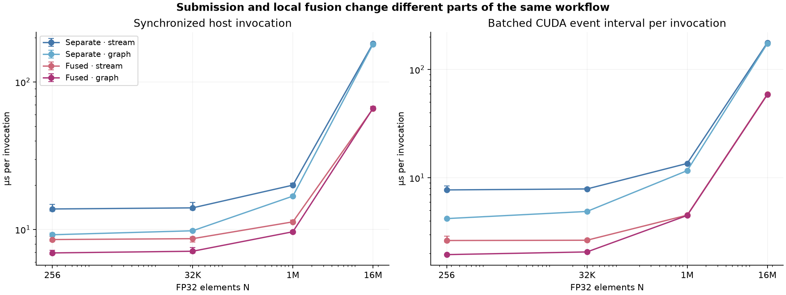
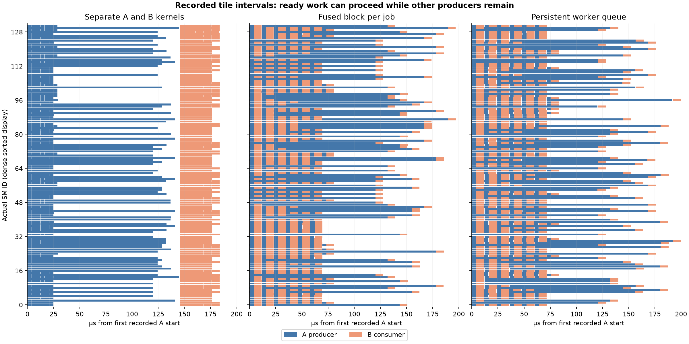

Historical supporting material. The current article uses the single RMS-scaled softmax workload. This page retains an earlier experiment or claim audit.
Saved run 20261018T211922Z on NVIDIA H100 80GB HBM3, 132 SMs, 52,428,800 L2 bytes. Runtime 12080; driver API 13030. Function work elapsed 55.4 seconds, excluding final hashing and archive construction. Hardware/clock state is retained in device-before/after files.
All 450 originally indexed files passed SHA-256 and size verification. Independent CPU oracles checked preflight, benchmark, and trace outputs. The failed earlier run is retained separately on the Modal Volume and contributes no timings.
Pointwise example
Medians over 21 shuffled rounds. Single = submission through stream completion. Enqueue = batched host submission only. Event = batched device timeline interval per invocation, including possible host starvation; not an isolated kernel duration. p10/p90 and all samples remain in analysis.json and samples.jsonl.
Scroll horizontally to see the full table.
| N | Variant | Host single µs | Host enqueue µs | Event interval µs |
|---|---|---|---|---|
| 256 | separate_stream | 13.778 | 7.708 | 7.734 |
| 256 | separate_graph | 9.215 | 1.206 | 4.203 |
| 256 | fused_stream | 8.550 | 2.613 | 2.637 |
| 256 | fused_graph | 6.939 | 1.227 | 1.954 |
| 32,768 | separate_stream | 14.019 | 7.871 | 7.896 |
| 32,768 | separate_graph | 9.804 | 1.204 | 4.892 |
| 32,768 | fused_stream | 8.667 | 2.627 | 2.653 |
| 32,768 | fused_graph | 7.124 | 1.233 | 2.069 |
| 1,048,576 | separate_stream | 19.986 | 7.837 | 13.579 |
| 1,048,576 | separate_graph | 16.837 | 1.199 | 11.651 |
| 1,048,576 | fused_stream | 11.270 | 2.608 | 4.521 |
| 1,048,576 | fused_graph | 9.657 | 1.206 | 4.491 |
| 16,777,216 | separate_stream | 182.558 | 8.083 | 176.937 |
| 16,777,216 | separate_graph | 180.452 | 1.246 | 173.833 |
| 16,777,216 | fused_stream | 66.033 | 2.700 | 59.216 |
| 16,777,216 | fused_graph | 66.310 | 1.246 | 58.614 |

The graph node checks confirm 3 kernel nodes for separate pointwise and 1 for fused. Arithmetic and pointers stay fixed within comparisons. Logical global-memory array traffic is 24N versus 8N bytes. DRAM metrics below must not be equated to those logical counts.
Ragged and balanced scheduling
Scroll horizontally to see the full table.
| Case | Variant | Host single µs | Event interval µs |
|---|---|---|---|
| tiles_balanced | fused_graph | 127.480 | 120.861 |
| tiles_balanced | fused_stream | 129.751 | 120.888 |
| tiles_balanced | queue_graph | 122.708 | 117.091 |
| tiles_balanced | queue_stream | 125.765 | 117.188 |
| tiles_balanced | separate_graph | 130.583 | 124.045 |
| tiles_balanced | separate_stream | 133.529 | 124.945 |
| tiles_ragged | fused_graph | 212.524 | 206.862 |
| tiles_ragged | fused_stream | 213.161 | 207.189 |
| tiles_ragged | queue_graph | 205.790 | 199.510 |
| tiles_ragged | queue_stream | 210.059 | 199.574 |
| tiles_ragged | separate_graph | 206.854 | 199.225 |
| tiles_ragged | separate_stream | 209.892 | 200.198 |
Separate B waits for all A. Fused and queue variants retain the global intermediate while allowing each job's B after its own A. Occupancy checks limit residency to at most one active thread block per SM through an artificial shared-memory reservation. Queue reset is included in every invocation and graph; it is a memset node in addition to the persistent kernel. Balanced and ragged cases have different total producer iteration counts (611,328 versus 748,032 before multiplying by 256 threads), so their timings cannot isolate the cost of imbalance.
Scroll horizontally to see the full table.
| Trace fixture 0 | Jobs starting B before the last A completes | Instrumented span µs |
|---|---|---|
| tiles_ragged_fused_graph_fixture0_trace.csv | 596 / 597 | 197.088 |
| tiles_ragged_queue_graph_fixture0_trace.csv | 596 / 597 | 199.616 |
| tiles_ragged_separate_graph_fixture0_trace.csv | 0 / 597 | 183.936 |

Each panel is a separate instrumented launch aligned to its first A timestamp, with a common horizontal scale. Each mark comes from thread-zero globaltimer observations around a stage ending with a block barrier. Bars are recorded intervals, not a direct SM utilization counter. All observed SMs and jobs are included; gaps are not an independently measured breakdown of idle causes. Instrumentation, changed scheduling, and tracing overhead exclude these spans from the latency comparison.
Profiling evidence
Nsight Systems exported 4 SQLite captures and 20 CUDA activity records. Only CUDA activity records and directly referenced kernel names are exported in cuda-activities.json. Raw reports remain private.
- separate_graph: 3 exported metric rows. Raw CSV is metrics-separate_graph.stdout; counters were collected separately from timing.
- fused_graph: 3 exported metric rows. Raw CSV is metrics-fused_graph.stdout; counters were collected separately from timing.
Systems records 9 separate-stream kernel activities, 3 fused-stream kernel activities, and 6 whole-graph activities. Its default graph capture records graph executions rather than individual node durations. Graph DOT/API checks and Compute's named graph-kernel samples supply the node evidence; do not infer missing node times from the Systems capture.
Compute counters use the default all-cache-flush policy per replay, separate from the warm-cache benchmark. Auto-scaled CSV units are preserved per metric; Mbyte is decimal MB. Kernel-scoped store counters may omit dirty cache lines written back outside that kernel's interval. The counters cannot establish a 3× HBM ratio in the warm loop. Nsight Compute cache control.
Missing or failed profiling commands are recorded in commands.json and their stderr; availability of a report alone does not prove useful counters. Separate-graph Compute samples cover one three-kernel invocation; fused samples cover three one-kernel invocations, so compare per-invocation traffic using kernel IDs rather than summing both files indiscriminately.
Graph setup metadata retains a field named first_replay_sync_us. Its original interval also includes graph queries and DOT serialization after instantiation; it is not a clean first-replay latency and is excluded from all performance claims. Capture and instantiation fields retain their narrower scopes. Original indexed files remain unchanged; local revalidation writes analysis-local.json.
Scope
These measurements establish this toy workload on one allocation. They do not reproduce historical LLM benchmarks, isolate universal launch constants, benchmark PDL, or validate a cross-SM semaphore runtime. The persistent queue has a deliberately simple scheduler and resource limit. Its result is not a general comparison of persistent versus nonpersistent execution.